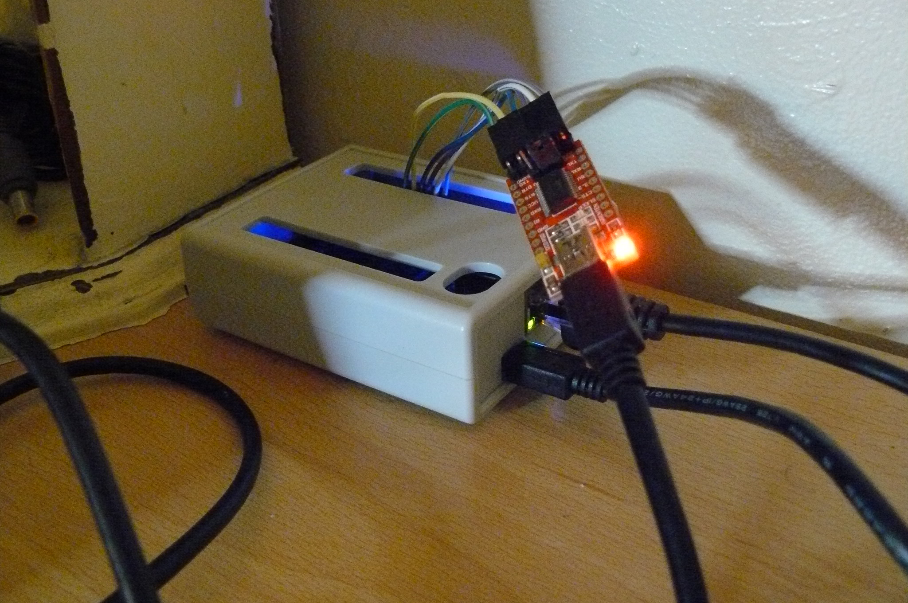
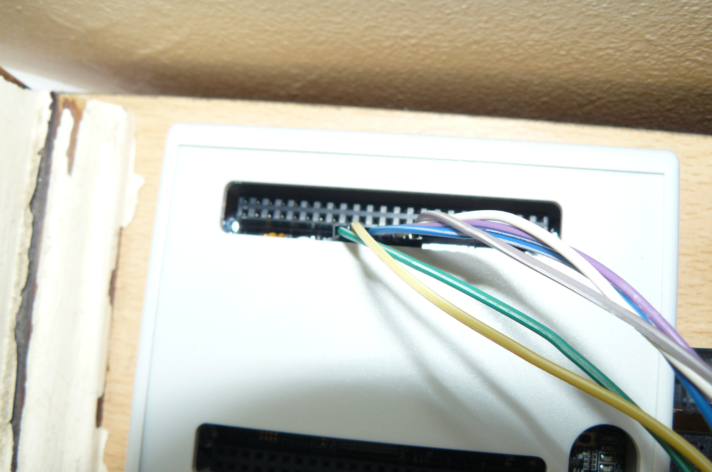
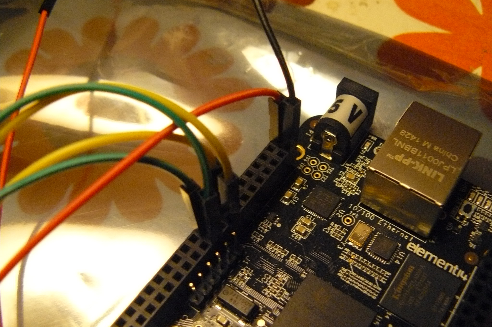
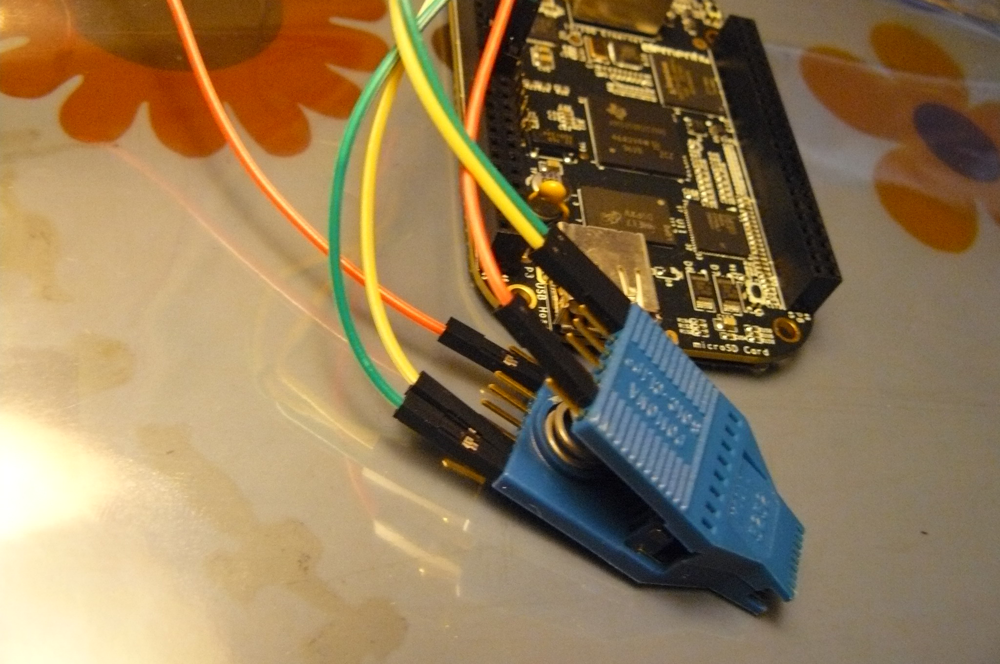

Setting up the 3.3V DC PSU
ATX PSU pinouts are on wikipedia
On 20-pin ATX PSUs, you can use pin 1 or 2 (orange) for 3.3V, and any of the ground/earth sources (black cables).
Short PS_ON# / Power on (green) to a ground (black. there is one right next to it) using a wire/paperclip/jumper then
power on the PSU.
On newer 24-pin ATX PSUs, there is an additional 3.3V (orange) on pin 12.
You only need one 3.3V supply and one ground for the flash chip, after grounding PS_ON# to ground.
Multiple 3.3V supplies means that you could theoretically power multiple flash chips at once with the
same PSU.
Here is an example set up:

Setting up the BBB
Your BBB will have an sshd with no password on root. Find it's IP address
(it will use DHCP by default) and set a root password. The steps below
are done while SSH'd into a BBB.
You can also use a serial FTDI debug board, with GNU Screen (example):
# screen /dev/ttyUSB0 115200


show an FTDI debug board in use. With screen you can then login as root, like you would using SSH.
Using this, you can also see text output (from kernel, etc) when booting the machine.
You can also simply connect the USB cable from the BBB to another computer and a new network interface will appear,
with it's own IP address: this is the BBB. You can SSH into that. Or, you can (example):
# screen /dev/ttyACM0 115200
These instructions may or may not work for you. They are simply the steps that this author took.
setting up SPIDEV on the BBB: http://elinux.org/BeagleBone_Black_Enable_SPIDEV#SPI0
- If you only setup SPI0, you don't have to disable the HDMI out. (you only need one).
That guide is for seting up the device overlay for SPIDEV, last part is to make it persist across reboots.
Needed to turn the BBB into an SPI flasher.
Don't bother modifying uEnv.txt. it won't work;
use the workaround here instead: http://elinux.org/Beagleboard:BeagleBoneBlack_Debian#Loading_custom_capes.
Follow the instructions at http://elinux.org/BeagleBone_Black_Enable_SPIDEV#SPI0
up to (and excluding) the point where it tells you to modify uEnv.txt
You need to update the software on the BBB first. If you have an
element14 brand BBB (sold by Premier Farnell plc. stores like
Farnell element14, Newark element14, and Embest), you may need
to work around a bug
in the LED aging init script before you can update your
software. If you don't have a file named
/etc/init.d/led_aging.sh, you can skip this step and update your
software as described below. Otherwise, replace the contents of
this file with:
#!/bin/sh -e
### BEGIN INIT INFO
# Provides: led_aging.sh
# Required-Start: $local_fs
# Required-Stop: $local_fs
# Default-Start: 2 3 4 5
# Default-Stop: 0 1 6
# Short-Description: Start LED aging
# Description: Starts LED aging (whatever that is)
### END INIT INFO
x=$(/bin/ps -ef | /bin/grep "[l]ed_acc")
if [ ! -n "$x" -a -x /usr/bin/led_acc ]; then
/usr/bin/led_acc &
fi
Run
apt-get update and
apt-get upgrade then reboot the BBB, before continuing.
Run those commands:
# echo BB-SPI0-01 > /sys/devices/bone_capemgr.*/slots
Then I did:
# ls -al /dev/spidev0.*
ls: cannot access /dev/spidev0.*: No such file or directory
Then I rebooted and did:
# cat /sys/devices/bone_capemgr.*/slots
Output:
0: 54:PF---
1: 55:PF---
2: 56:PF---
3: 57:PF---
4: ff:P-O-L Bone-LT-eMMC-2G,00A0,Texas Instrument,BB-BONE-EMMC-2G
5: ff:P-O-L Bone-Black-HDMI,00A0,Texas Instrument,BB-BONELT-HDMI
And then:
# ls /lib/firmware/BB-SPI0-01-00A0.*
Output:
/lib/firmware/BB-SPI0-01-00A0.dtbo
Then:
# echo BB-SPI0-01 > /sys/devices/bone_capemgr.*/slots
# cat /sys/devices/bone_capemgr.*/slots
Output:
0: 54:PF---
1: 55:PF---
2: 56:PF---
3: 57:PF---
4: ff:P-O-L Bone-LT-eMMC-2G,00A0,Texas Instrument,BB-BONE-EMMC-2G
5: ff:P-O-L Bone-Black-HDMI,00A0,Texas Instrument,BB-BONELT-HDMI
7: ff:P-O-L Override Board Name,00A0,Override Manuf,BB-SPI0-01
Then check if the device exists:
# ls -al /dev/spidev0.*
Output:
ls: cannot access /dev/spidev0.*: No such file or directory
It didn't exist under that name, but I then did:
# ls -al /dev/spid*
Output:
crw-rw---T 1 root spi 153, 0 Nov 19 21:07 /dev/spidev1.0
Now the BBB is ready to be used for flashing. Make this persist
across reboots:
In /etc/default/capemgr add CAPE=BB-SPI0-01 at the end
(or change the existing CAPE= entry to say that, if an
entry already exists.
Get flashrom from libreboot_util release archive, or build it from libreboot_src/git if you need to.
An ARM binary (statically compiled) for flashrom exists in libreboot_util releases.
Now test flashrom:
# ./flashrom -p linux_spi:dev=/dev/spidev1.0,spispeed=512
Output:
Calibrating delay loop... OK.
No EEPROM/flash device found.
Note: flashrom can never write if the flash chip isn't found automatically.
This means that it's working (the clip isn't connected to any flash chip,
so the error is fine).
Connecting the Pomona 5250/5252
Use this image for reference when connecting the pomona to the BBB:
http://beagleboard.org/Support/bone101#headers
(D0 = MISO or connects to MISO).
The following shows how to connect clip to the BBB (on the P9 header), for SOIC-16 (clip: Pomona 5252):
NC - - 21
1 - - 17
NC - - NC
NC - - NC
NC - - NC
NC - - NC
18 - - 3.3V PSU RED
22 - - NC - this is pin 1 on the flash chip
This is how you will connect. Numbers refer to pin numbers on the BBB, on the plugs near the DC jack.
The following shows how to connect clip to the BBB (on the P9 header), for SOIC-8 (clip: Pomona 5250):
18 - - 1
22 - - NC
NC - - 21
3.3V PSU RED - - 17 - this is pin 1 on the flash chip
This is how you will connect. Numbers refer to pin numbers on the BBB, on the plugs near the DC jack.
NC = no connection
DO NOT connect 3.3V PSU RED yet. ONLY connect this once the pomona is connected to the flash chip.
You also need to connect the BLACK wire from the 3.3V PSU to pin 2 on the BBB (P9 header). It is safe to install this now
(that is, before you connect the pomona to the flash chip).
if you need to extend the 3.3v psu leads, just use the same colour M-F leads, but keep all other
leads short (10cm or less)
You should now have something that looks like this:


That's basically it. Now refer back to the installation page for how to use this on your board.
Back to top of page.